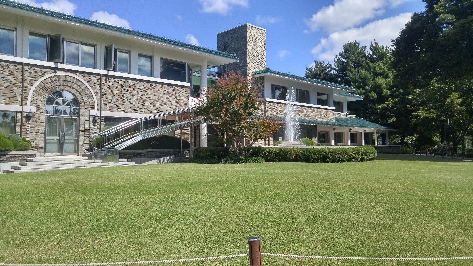
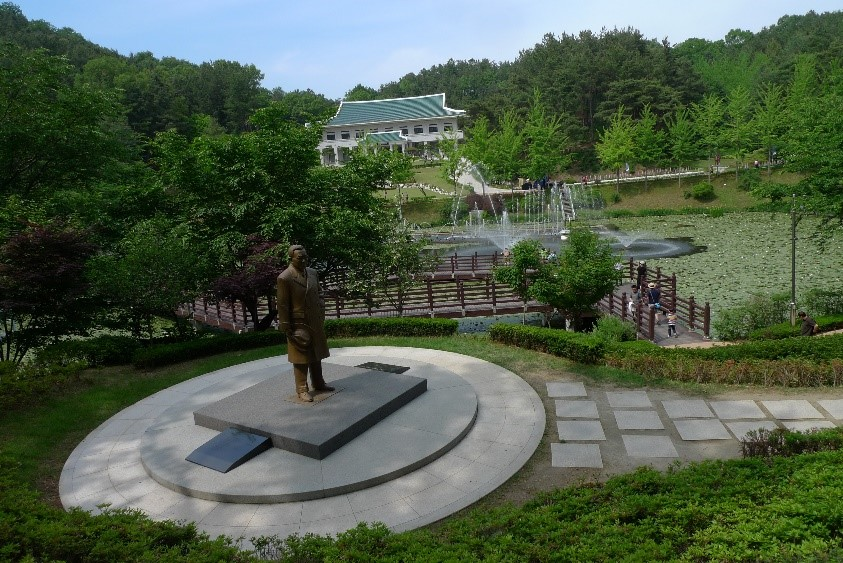
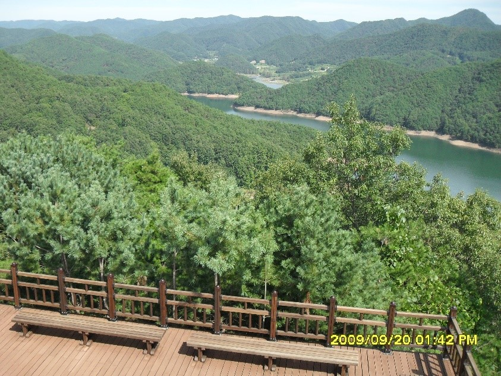
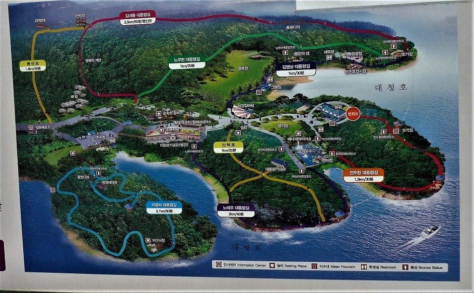
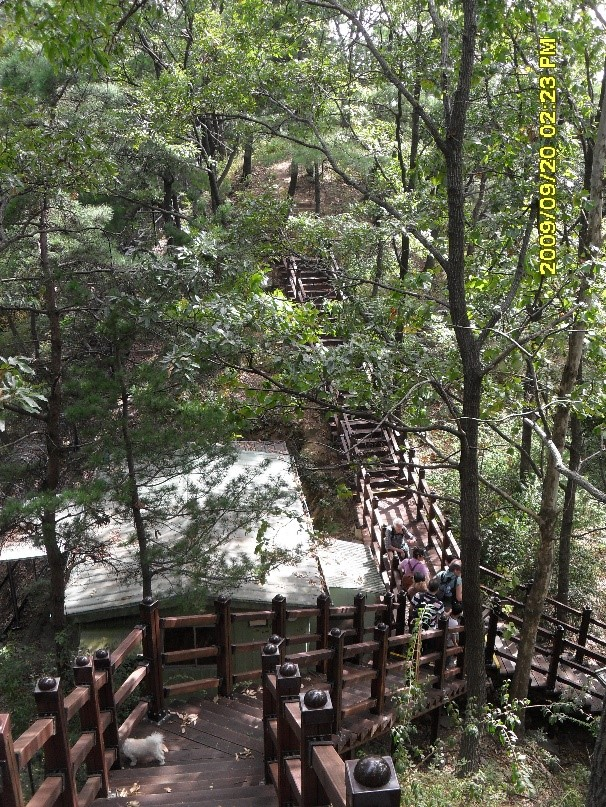

Presidential retreat

This presidential retreat was opened in 1983 for the exclusive use of the president, top government
officials and their families as a retreat and 2nd home. Although in a remote location, it is not a far
drive from Daejeon on Korea’s modern, fast highways and well worth a visit. It is considered one of the
most beautiful locations in the province situated on the shores of lake Daecheongho (대청호). Our hiking
group has visited this property numerous times and we have always enjoyed the numerous hiking trails
around each of the peninsulas as well as the hiking trails into the pine forest in the upper reaches of
the property. While there I would highly recommend taking the opportunity to visit the former luxurious
retreat ”home away from home” of the presidents while away from the Blue house of Seoul from 1983 to
2003. You are required to remove your shoes and wear special slippers when entering the presidential
home. Much of the furniture used still remains giving the place an authentic lived- in feel so you can
imagine from the surroundings how the president’s family lived and entertained important political
figures here.
Fish farm with fountains

The trails are very well marked and maintained. As the retreat was developed during a time of great
peril for the president of the republic there is chance to observe how the property was protected from
attack by guard houses and barbed wire. Security was paramount at that time following unsuccessful
attacks on the Blue house in Seoul and after the October 6th, 1983 Rangoon, Burma bombing which was an
assignation attempt on President Chun Doo Hwan (전두환) by North Korean agents. Although he survived 21
others, mainly government officials were killed including 4 senior ministers. To discover more
fascinating and at times turbulent history of the years from 1983 to 2003 visit the onsite museum called
대통령 기념관 which translates to President’s Memorial place. Here you can learn some background information
on each of the presidents that used this retreat and see some memorabilia such as the presidential open
top black car. In front of the President’s Memorial place is a beautiful fishing pond covered in lily
pads called 양어장 (fishing farm) in Korean with water fountains making this a place worth stopping by for
a picture before heading to the trails. During the time of president Chun Doo Hwan (전두환) the fish farm
pond was made into an outdoor ice skating rink which the former president enjoyed using during winter
holidays.
When to visit

I recommend this as an all day visit. There are no strenuous hikes in the area but many trails that pass
through the woods and along the lake. There are some steep trails but then there are numerous pavilions
well placed to take a rest in and also have lunch. There are many special weekends when social events
are planned including concerts in the amphitheater on the property. We have been there for one of these
and at that time there were many crowds and parking is difficult so one must wait for a shuttle bus to
enter the property. You can chose which to do although I personally prefer the weekends when there are
no activities planned as it is a time to really appreciate the serenity of this beautiful location. Keep
in mind as the area is run as a tourist attraction by the government like most museums it is closed on
Mondays. There is an admission fee of 5000 won for adults and 3000 won for children or seniors. During
the autumn when leaves change color this park is especially crowded with the combination of wooded hilly
trails and lakeside walks attracting families from across the country.
Which trail to follow?

You will probably need more than one visit to cover all of the trails here although none are very long.
Each trail is named after a former president, some trails following the peninsula shore that hugs the
lake and others leading up into the lush pine forest in the hills above. The trails include 전두환 코스 (Chun
Doo Hwan course) 1.5 km, 김영삼 코스 (Kim Young Sam course) 1 km, 노무현 코스 (Roh Moo Hyun course) 1 km, 노태우 코스
(Roh Tae Woo course) 2 km, 이명벽 코스(Lee Myeon Byeok course) 3.1 km and 김대중 코스 (Kim Dae Joong course) 2.5
km. By way of taking the Kim Dae Joong (김대중) course you will come across a 3 story observatory well
worth the climb up for impressive views of surrounds and lake.
Staircase

The huge staircase that forms the basis of the trail up the hill from the road to the observatory is
nicknamed the 행복의 계단 which translates to “Stairway to happiness”. Indeed, you will be happy if you have
finally reached the top of the stairs! You will find a statue on each trail of the president whose
namesake is used for that particular trail. And being Korea you are never far away from free public
toilets while exploring the presidential trails.